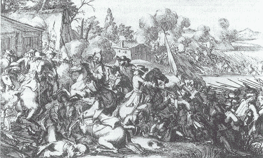
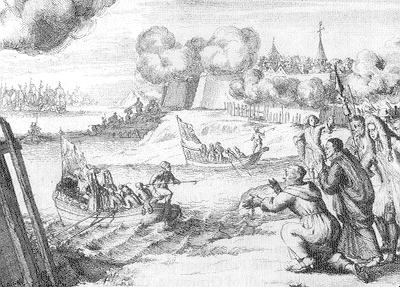

The Battle of the Boyne
1st July 1690
Tune
Sequenced by Lesley Nelson-BurnsSequenced by Ch. Souchon
Other title of the tune: "The Rashes", Scottish air first published in "William Graham's Lutebook", 1694
See also Lady Keith's Lament
{kind=link}


|
1. A kingly host upon a stream, a monarch camped around Its southern upland far and wide their white pavilions crowned; Not long ago that sky unclouded showed, nor beneath the ray, That gentle stream in silver flowed to meet the new-born day. 2. Peals the loud gun-its thunders boom the echoing vales along While curtained in its sulfurous boom moves on the gallant thrown. And Foot and Horse in mingled mass, regardless all of life, With furious ardor onward pass to join the deadly strife. 3. Not strange that with such ardent flame each glowing heart beats high, Their battle-word was William's name and Death and Liberty! Then Oldbridge, then thy peaceful bowers with sounds unwonted rang, And Tredagh, mid thy distant towers, was heard the mighty clang. 4. The silver stream is crimsoned wide and clogged with many a corpse, As floating down its gentle tide co- mingled man and horse; Now fiercer grows the battle's rage, the guarded stream is crossed, And furious, hand-to-hand, engage each bold contending host. 5. He falls-the veteran hero falls, renowned along the Rhine- And he whose name, while Derry s walls endure shall brightly shine; Oh! would to heaven that churchman bold, his arms with triumph blest, The soldier spirit had controlled that fired his pious breast. 6. And he, the chief of yonder brave and persecuted band, Who foremost rushed amid the wave and gained the hostile strand, He bleeds, brave Caillemonte-he bleeds -tis closed, his bright career, Yet still that band to glorious deeds his dying accents cheer, 7. And now that well-contested strand successive columns gain, While backward James yielding band are borne across the plain; In vain the sword green Erin draws, and life away doth fling- Oh! worthy of a better cause and of a bolder king. 8. In vain thy bearing bold is shown upon that blood-stained ground; Thy towering hopes are overthrown, thy choicest fall around; Nor, shamed abandon thou the fray, nor blush though conquered there; A power against thee fights today no mortal arm may dare. 9. Hurrah! Hurrah! For Liberty, for her sword we draw, And dared the battle while on high our Orange banners flew. Woe worth the hour- worth the state, when men shall cease to join Wit grateful hearts to celebrate the glories of the Boyne!(5) |
1. Sur la rive un roi, son armée,(1) Avaient dressé leur camp. Au sud les monts étaient jonchés De leurs pavillons blancs; Le soleil, perçant la nuée, Avait de ses rayons, Fait luire un serpent argenté Au milieu des gazons. 2. Le canon tonne et l'on entend Retentir les vallées. Dans ce sulfureux grondement Approche une autre armée. Fantassins et cavaliers, Au péril de leurs vies, Avec ardeur vont affronter Un cruel ennemi. 3. Qui s'étonnerait de la flamme Dont s'embrasent leurs coeurs? Leur seul cri de guerre est "Guillaume, La liberté! La mort!" Les paisibles fermes d'Oldbridge Résonnaient de ces bruits, Que Tredagh, lointaine bastille, Pouvait entendre aussi. 4. Le ruisseau d'argent s'assombrit Du sang de tous ces corps, Et le flot mélange et charrie Hommes et chevaux morts; La bataille à nouveau fait rage, La rivière est franchie, Un furieux corps à corps s'engage, Entre camps ennemis. 5. Et l'on voit tomber l'homme hardi(2), Que le Rhin redoutait; Celui dont les murs de Derry Clament la renommée ; Fallait-il que ce prêtre faille A implorer Dieu quand , Il tournait face à la mitraille La poitrine en priant? 6. Toi, le chef de ces autres braves Au tragique destin, Qui s'en furent parmi les vagues Jusque dans l'autre camp, Caillemonte(4), vois, ton sang coule Et ton sort est scellé! Mais si tu cries parmi la foule C'est pour l'encourager.(3) 7. Les colonnes, vague après vague, Sur ces bords prennent pied, Tandis qu'on voit l'armée de Jacques Peu à peu reculer; Verte Erin, en vain tu t'acharnes A sacrifier ces vies- Dignes de manier d'autres armes Pour un roi plus hardi. 8. Tu fais preuve en vain de vaillance En ces lieux sanglants; Vois comme une vaine espérance, Draine ton meilleur sang; Tu peux fuir le combat sans honte, Et t'avouer vaincue; Braver la force qui t'affronte, Quel mortel l'aurait pu? 9. Hourra! Vive la liberté! Pour qui nous combattons; Nous qui, bien haut, avons porté D'Orange les fanions. Maudit, le jour où cessera L'afflux, pour nous rejoindre, De ceux clamant par leurs vivats Les gloires de la Boyne!(5) (Trad. Ch.Souchon(c)2005)
|
|
(1)James II had sought refuge with his old ally, Louis XIV, who provided French officers and arms for him. He landed in Ireland at Kinsale in March 1689. The Earl of Tyrconnell, was a Catholic loyal to James, and his Irish army controlled most of the island.
King William sent to Ireland, in August 1689, Marshal Schomberg who landed at Bangor with 20,000 troops and pushed south as far as Dundalk and the two armies withdrew to winter quarters. In March 1690 the Jacobite army was strengthened by 7,000 French regulars, but Louis demanded over 5,000 Irish troops in return. The Williamites were reinforced by Danish mercenaries and by English and Dutch regiments. When William himself landed at Carrickfergus on 14 June, he was able to muster an army of 36,000 men. He began the march towards Dublin but the Jacobites soon withdrew to the south bank of the River Boyne. The battle was fought on 1st July 1690 at a fordable river bend four miles west of Drogheda. The main body of Williamite infantry was concentrated on fording the river at the village of Oldbridge. First, however, a detachment of cavalry and infantry made a flanking attack upstream, which forced James to divert troops to prevent his retreat being cut off. After these troops were drawn off he had three-to-one superiority in the main arena. By mid-afternoon the Jacobite army was in retreat, outpaced by James himself, who rode to Dublin to warn the city of William's approach. He was in France before the month was out and died there in 1701. On 6th July 1690 William entered Dublin, where he gave thanks for victory in Christ Church Cathedral. (2)George Walker 1618–90, Irish Anglican clergyman and commander. As joint governor of Londonderry (Derry) during the siege (1689) of that city by the army of the deposed James II, Walker roused the people by his courage and inspiring sermons and was able to hold the city for 105 days until it was relieved. He received the thanks of Parliament, was given £5,000 by William III for the citizens of Londonderry, and was designated bishop of Derry. He published A True Account of the Siege of Londonderry (1689) and, in answer to charges of self-seeking, a Vindication (1690). Walker was killed in the battle of the Boyne. (3) Frederick Herman, 1st duke of Schomberg (Friedrich Hermann von Schönberg), 1615-90, was a German soldier of fortune. After serving on the Protestant side in the Thirty Years War, he entered French service in the early 1650s during the Fronde. From 1659 to 1668 Schomberg commanded a French army helping Portugal win independence from Spain. He won the victory of Montes Claros on June 17, 1665 over the Spaniards under the prince of Parma. Schomberg distinguished himself in the Third Dutch War (1672-78) and was created marshal of France and duke by King Louis XIV. After the revocation of the Edict of Nantes (1685), Schomberg, a Protestant, left France and entered the service of the elector of Brandenburg, who made him commander in chief of the army of Brandenburg in 1687. He assisted (1688) William III of Orange, who was allied with Brandenburg, in the Glorious Revolution. Created (1689) duke of Schomberg in the English peerage, he was given command of the English forces in Ireland. After capturing Carrickfergus entrenched himself at Dundalk. ln the spring he began the campaign with the capture of Charlemont, but no advance southward was made until the arrival of William. He was killed in the battle of the Boyne. (4) "Caillemonte" could be a faulty spelling of "Claros Montes" or "Charlemont", two places were Schomberg distinguished himself. (5) The Battle of the Boyne is recalled each July in the celebrations of the Orange Order.
|
(1) Jacques II avait cherché refuge auprès de son vieil allié Louis XIV qui lui fournit des officiers français et des armes. Il débarqua en Irlande à Kinsale en mars 1689. Le Comte de Tyrconnel, catholique demeuré fidèle aux Stuarts avec son armée irlandaise était maître de presque toute l'île. Le roi Guillaume envoya en Irlande, en août 1689, le Maréchal Schomberg qui débarqua à Bangor avec 20.000 soldats et avança vers le sud jusqu'à Dunkalk. Puis les deux armées prirent leurs quartiers d'hiver. En mars 1690, l'armée Jacobite fut renforcée de 7000 Français, mais Louis réclama en échange 5000 soldats irlandais. Les Orangistes furent renforcés par des mercenaires danois et par des régiments anglais et hollandais. Lorsque Guillaume lui-même débarqua à Carrickfergus le 14 Juin, il était à la tête d'une armée de 36.000 hommes. Après avoir entamé une marche vers Dublin, il vit bientôt les Jacobites se retirer sur la rive sud de la rivière Boyne. La bataille eut lieu le 1er juillet 1690 sur une boucle guéable de la rivière à 15 km de Drogheda. Le gros de l'infanterie orangiste consacra ses efforts à traverser à pied la rivière au village d'Oldbridge. Auparavant, toutefois, un détachement de cavalerie et d'infanterie exécuta une attaque de flanc en amont qui contraignit Jacques à détacher des troupes pour que le chemin de la retraite ne lui soit pas coupé. Après leur départ, Guillaume avait une supériorité numérique de trois contre un sur le théâtre d'opérations principal. Vers le milieu de l'après-midi, l'armée Jacobite battit en retraite, précédée de Jacques lui-même, qui chevaucha jusqu'à Dublin pour avertir la ville de l'approche de Guillaume. Il avait regagné la France avant la fin du mois et y mourut en 1701. Le 6 juillet 1690, Guillaume fit son entrée dans Dublin où une cérémonie d'action de grâce pour sa victoire eut lieu dans la cathédrale de l'Eglise du Christ. (2)George Walker 1618–90, pasteur anglican irlandais et chef d'armée. Alors qu'il était gouverneur de Londonderry (Derry) pendant le siège de cette ville par l'armée de Jacques II qui venait d'être déposé, Walker souleva le peuple par ses sermons enflammés et parvint à soutenir le siège pendant 105 jours jusqu'à ce que la ville soit libérée. Il reçut les remerciements du parlement et un don de 5.000 livres de Guillaume destiné aux habitants de Londonderry. Il publia une "Relation fidèle du siège de Londonderry" (1689) et, en réponse à une accusation de conduite intéressée, une "Justification" (1690). Il fut tué à la bataille de la Boyne.
(3) Frédéric Hermann, 1er Duc de Schomberg (Friedrich Hermann von Schönberg), 1615-90, était un condottiere allemand. Après avoir combattu dans le camp protestant pendant le guerre de Trente Ans, il entra au service du roi de France au début des années 1650 pendant la Fronde. De 1659 à 1668, il commanda l'armée française qui aida le Portugal à conquérir son indépendance face à l'Espagne et remporta la victoire de Montes Claros le 17 juin 1665 sur les Espagnols du Prince de Parme. (4) "Caillemonte" est peut-être une mauvaise graphie de "Claros Montes" ou de "Charlemont", deux batailles où Schomberg s'illustra. (5) La bataille de la Boyne donne lieu à une commémoration par l'"Ordre des Orangistes" chaque mois de juillet. |
